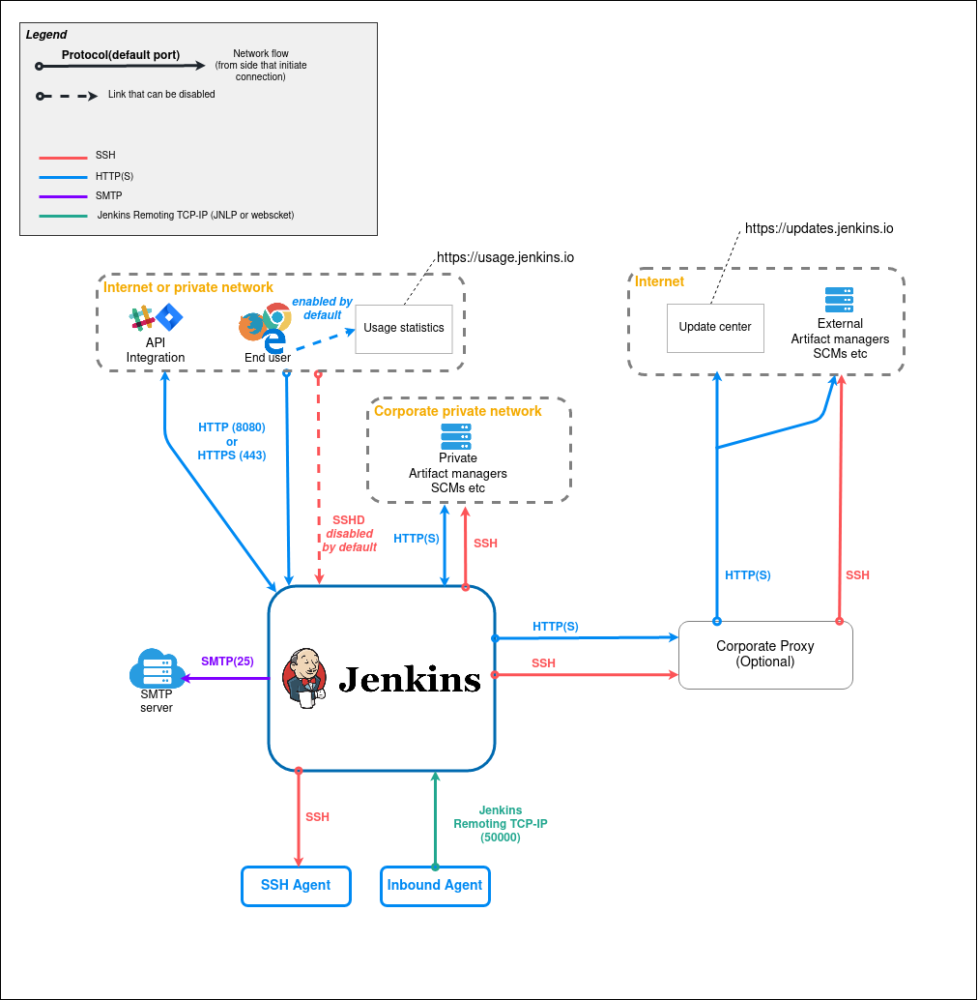
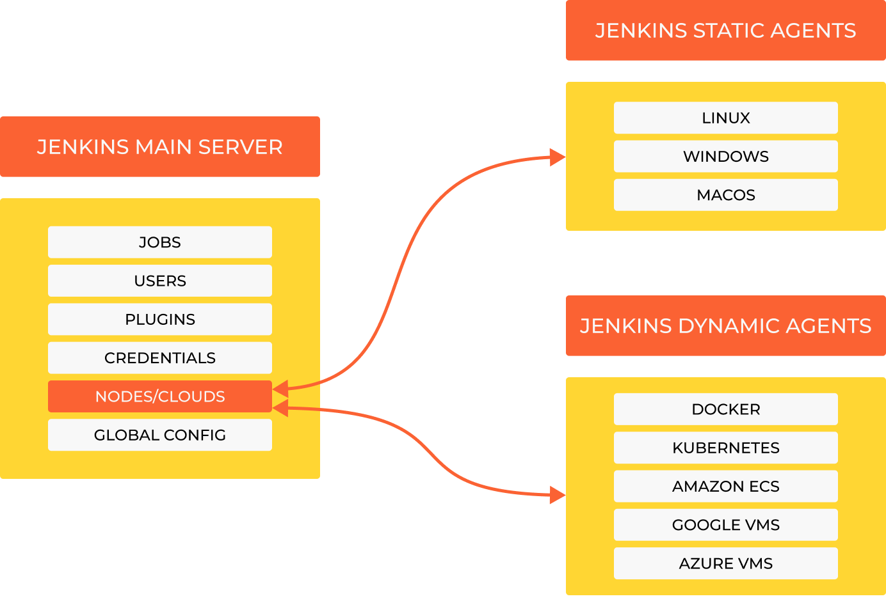

7.5 Jenkins Architecture
Jenkins architecture:
This provides a top-level summary of the Jenkins architecture. The following dataflow diagram portrays Jenkins as a ‘box,’ with the aim of illustrating the network traffic entering and exiting the system. This diagram offers a high-level perspective with a focus on the Jenkins core.
It’s important to note that certain plugins, such as the LDAP plugin, can introduce additional network traffic flows. Additionally, all port numbers can be adjusted through configuration, with the port in the diagram representing the default setting. Jenkins can also be configured to use TLS (HTTPS) for secure communication. Furthermore, it’s not obligatory to utilize all types of agents.
 {kind=link}
{kind=link}
1. Jenkins main server:
The Jenkins main serves is the primary controller for the Jenkins environment. It manages the configuration of Jenkins, schedules and coordinates jobs, and provides a web-based user interface for users to interact with Jenkins.
Here are the key components of the Jenkins main server:
Jenkins Core: This is the core engine of Jenkins, responsible for handling the basic operations of Jenkins, such as job scheduling, build and deployment management, and user authentication.
Web User Interface: Jenkins offers a web-based user interface that allows users to configure jobs, view build logs, and monitor the status of jobs and builds.
Job Configuration: Users can define and configure jobs using the web interface. These jobs represent tasks like building code, running tests, and deploying applications.
Build Executors: The master has its own build executor(s), but it can also delegate build tasks to agent nodes. These executors are responsible for executing build and test tasks.
Job Scheduling: The master schedules jobs to run on available agents. It keeps track of the overall workload and ensures that jobs are distributed efficiently.
Plugins: Jenkins has a rich ecosystem of plugins that extend its functionality. These plugins can be installed and configured on the master to add features like integration with version control systems, cloud platforms, and various tools.
Security and Authentication: Jenkins provides security features, including role-based access control (RBAC), that allow administrators to define user permissions and restrict access to sensitive areas.
2. Jenkins Agents (Nodes):
Agents, also known as nodes, are worker machines that perform the actual build and test tasks. These agents can run on different operating systems and environments, making them suitable for diverse development and testing needs.
Key features of Jenkins agents include:
Distributed Builds: Jenkins can distribute build and test tasks across multiple agents, enabling parallel processing and reducing build times. This feature is especially valuable for larger projects with heavy workloads.
Build Environment: Each agent can have a different build environment, tailored to specific requirements. For example, one agent might be configured with Java development tools, while another might have tools for Python development.
Availability and Scaling: Organizations can scale their Jenkins environment by adding more agents to handle increased workloads. Agents can be set up on various machines, including physical servers and cloud instances.
Agent Configuration: Agents can be configured to accept specific types of jobs or to restrict the jobs they accept, ensuring that tasks are executed on appropriate agent nodes.
Dedicated or Shared Agents: Organizations can choose to have dedicated agents for specific teams or projects or shared agents that handle various types of jobs.
3. Jenkins Controller (Optional):
In some cases, Jenkins can be configured with a controller, which acts as an intermediary between the master and agents. This controller manages agent connections and provides additional control and security features. Controllers are typically used in larger, more complex Jenkins environments.
4. Data Directory:
Jenkins stores its configuration, job definitions, build logs, and other data in a designated data directory on the master node. This data directory is crucial for backup, disaster recovery, and configuration management.
5. Build Workspaces:
Jenkins creates individual workspaces for each build job on the agents. These workspaces are used to store project files, source code, and build artifacts during the build process. Workspaces are isolated from one another to prevent interference between builds.
6. Network Communication:
Communication between the Jenkins master and agents occurs over the network. Agents can connect to the master using various protocols, including SSH and JNLP (Java Network Launch Protocol). The communication is encrypted for security.
7. Plugin System:
Jenkins’ extensibility is a significant strength, thanks to its plugin system. Users can install and configure plugins on the master to add features and integrate Jenkins with other tools and services. Plugins enable Jenkins to support a wide range of use cases and technologies.
8. Job Execution Flow:
The execution flow of a job in Jenkins typically follows these steps:
A user configures and triggers a job through the Jenkins web interface.
The Jenkins main server schedules the job and assigns it to an available agent node.
The agent checks out the project’s source code from the version control system.
The agent builds, tests, and packages the code as specified in the job configuration.
Build artifacts and test results are typically archived on the master.
The job’s status and logs are updated and made available in the web interface.
In summary, Jenkins main-agent architecture allows for efficient, distributed, and scalable automation of various tasks in the software development and deployment process. The main server controls job scheduling, configuration, and user interaction, while agents handle the execution of build and test tasks on diverse environments. This architecture, coupled with Jenkins flexibility and plugin ecosystem, makes it an excellent tool for implementing continuous integration and continuous deployment pipelines.